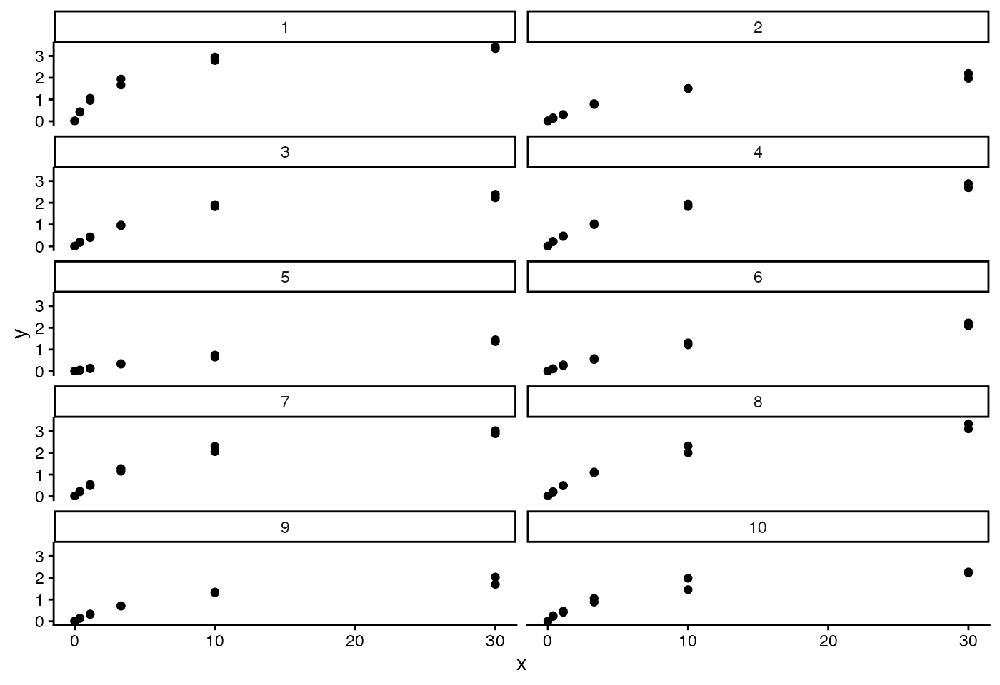
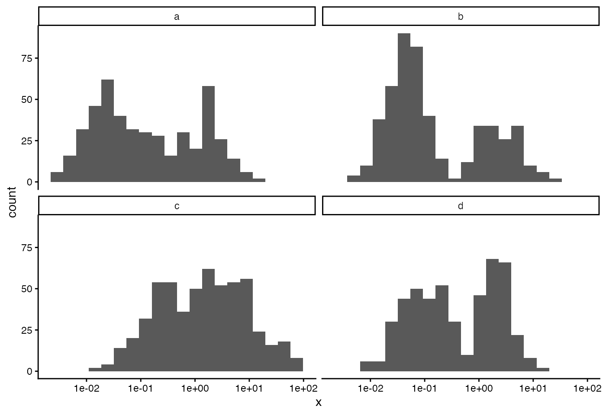
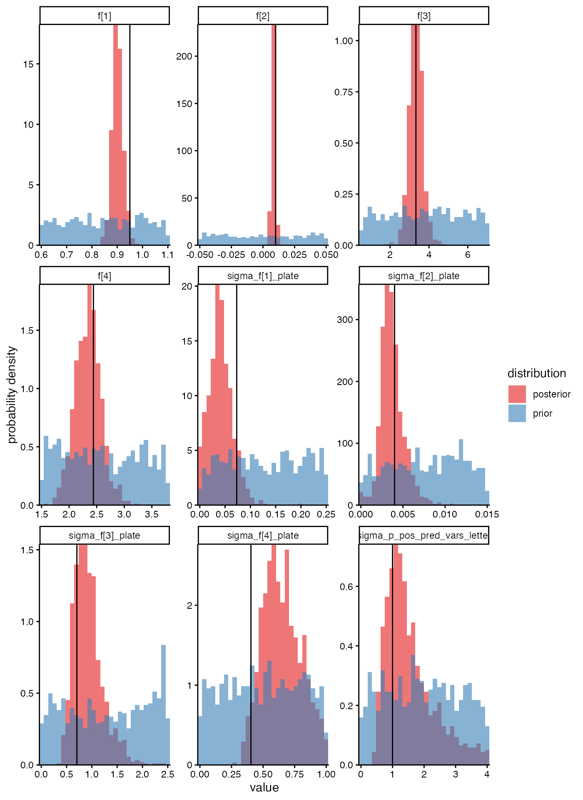
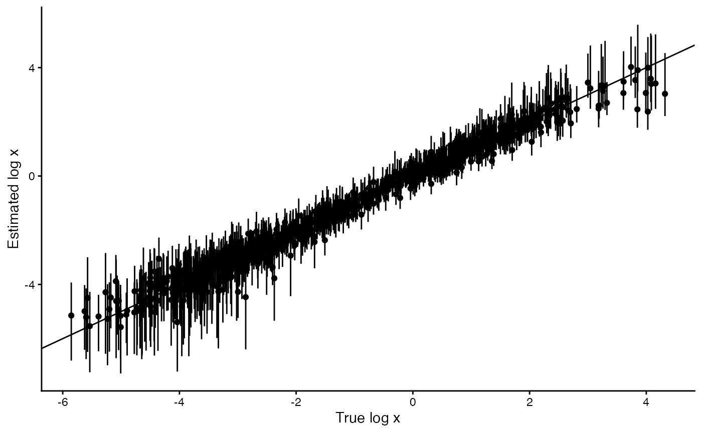
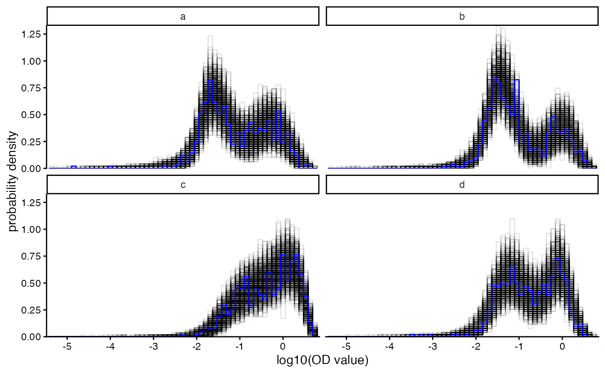
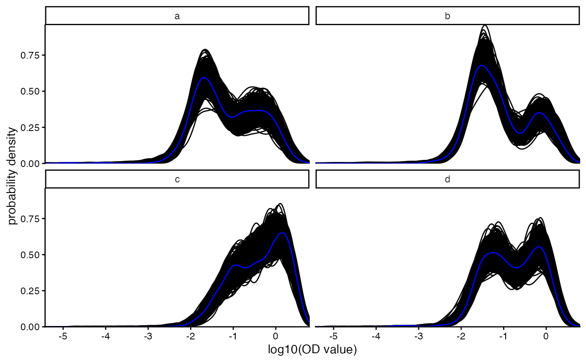
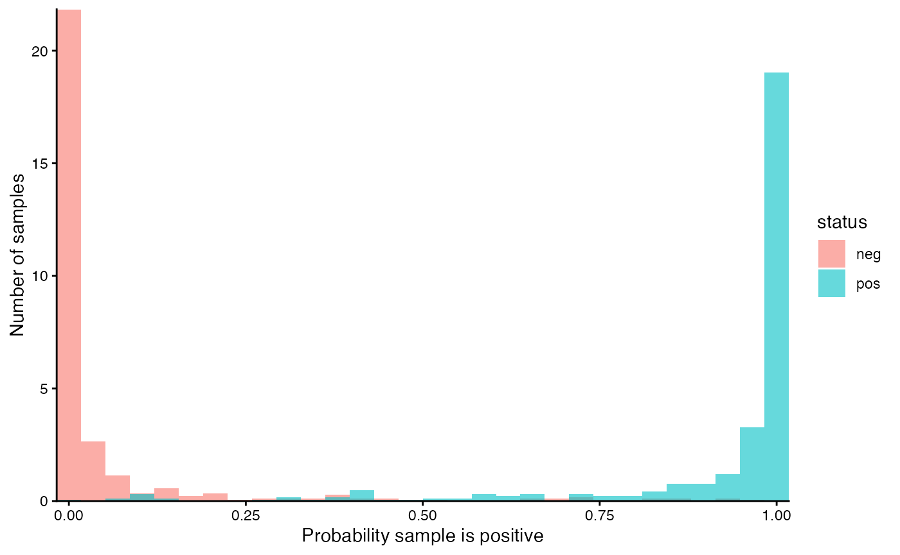

estimation_on_simulated_data_simple.Rmddvsb estimates disease variability in subpopulations from biomarkers, e.g. estimating the variability between subpopulations in seroprevalence (the proportion of people who are seropositive) with antibody levels estimated using an assay measuring some proxy such as ELISA Optical Density values. We call the biomarker x (e.g. antibody level) and the proxy measurement y (e.g. OD values).
Let’s start by getting out of the way two clunky things. First, dvsb
does not include pre-compiled binary (executable) files for the Stan
models. This is for our (developer) convenience at the cost of your
(user) inconvenience; it also means we can switch seamlessly between
rstan, cmdstanr and cmdstan when interfacing to stan. The first time you
call dvsb::run_stan_interfaces() after each installation or
update of dvsb, the Stan code gets compiled into binary form. That
happens automatically, but you do need to tell it where the Stan code
lives after dvsb has been installed onto your system. Let’s find where
that is:
stan_dir <- system.file("stan", package = "dvsb")
list.files(stan_dir, pattern = "*.stan")
#> [1] "dvsb_accidental_blanks.stan" "dvsb_no_mu_x_predictors.stan"
#> [3] "dvsb.stan"In that directory,
dvsb.stan is the main dvsb model.dvsb_accidental_blanks.stan is the extended model that
allows for the possibility that each sample well accidentally contains
nothing at all (i.e. is blank).dvsb_no_mu_x_predictors.stan is the restricted model in
which regression models are not specified for the means of the two
antibody distributions (one for seropositives and one for
seronegatives).Let’s use the main model.
stan_path <- file.path(stan_dir, "dvsb.stan")The second clunky thing: a dataframe’s worth of input specifying the priors is required. We store this in a csv file bundled with dvsb, so that you can more easily inspect it, modify it, make different copies for different analyses, move copies outside of your dvsb repository in case prior defaults are updated in later changes to dvsb, etc. Again, you just need to say where this file lives after dvsb has been installed on your system. We find where that is similarly:
priors_dir <- system.file("input_priors", package = "dvsb")
list.files(priors_dir)
#> [1] "priors.csv"Now set the path to that file - the one bundled with dvsb. (If you want to use a copy of this file that you moved somewhere else and perhaps modified, you would give that path instead.)
priors_path <- file.path(priors_dir, "priors.csv")OK those clunky things are done. Phew. Read in the prior file, giving us a list with three things in it:
priors_list <- read_priors(priors_path)
df_priors_scalars <- priors_list$df_priors_scalars
df_priors_vectors <- priors_list$df_priors_vectors
rho_prior_eta <- priors_list$rho_prior_etaNext we simulate data, giving us a list with seven things in it. (If
we were using real data instead of simulated data, we would simply need
to create the df_sam and df_cal dataframes
ourselves instead of running simulate_data() below. The
documentation for prepare_data_for_stan() explains what
columns these dataframes require, and how sets of covariates for
regression models are specified using the arguments
x_mix_pred_vars_names, p_pos_binary_pred_vars,
f_pred_vars_names.)
data <- simulate_data(seed = 1234,
num_sam_per_plate = 100)
df_sam <- data$df_sam
df_cal <- data$df_cal
df_plate <- data$df_plate
param_true_values_list <- data$params
f_pred_vars_names <- data$f_pred_vars_names
x_mix_pred_vars_names <- data$x_mix_pred_vars_names
p_pos_binary_pred_vars <- data$p_pos_binary_pred_varsPlot the simulated calibration data (one facet per plate):
ggplot(df_cal) +
geom_point(aes(x = x, y = y)) +
facet_wrap(~plate, ncol = 2) +
theme_classic()
Plot the simulated sample data, histogramming the OD values, one
facet for each category of the letter covariate (which
differ in their x distributions when using default arguments for
simulate_data()):
ggplot(df_sam) +
geom_histogram(aes(x = x), bins = 20) +
facet_wrap(~letter) +
theme_classic() +
scale_x_log10()
Wrangle the data and priors into the form needed for stan.
data_wrangled <- prepare_data_for_stan(
df_sam = df_sam,
df_cal = df_cal,
df_priors_scalars = df_priors_scalars,
df_priors_vectors = df_priors_vectors,
rho_prior_eta = rho_prior_eta,
x_mix_pred_vars_names = x_mix_pred_vars_names,
p_pos_binary_pred_vars = p_pos_binary_pred_vars,
f_pred_vars_names = f_pred_vars_names
)Update our dataframes for samples, calibrators and plates with the extra columns we just added (which introduce integer indexing).
df_sam <- data_wrangled$df_sam
df_cal <- data_wrangled$df_cal
df_plate <- dplyr::left_join(df_plate, data_wrangled$df_plate, by = "plate") We specify some options controlling how Stan runs (see the help for
run_stan_interfaces() for more information), then run Stan
once to sample from the posterior, and again to sample from the prior1.
df_posterior <- run_stan_interfaces(
input_to_stan = data_wrangled$stan_input_posterior,
path_to_stan_code = stan_path)
#> Started running Stan at[1] "2026-09-15 18:10:03 BST"
#>
#> SAMPLING FOR MODEL 'anon_model' NOW (CHAIN 2).
#>
#> SAMPLING FOR MODEL 'anon_model' NOW (CHAIN 1).
#>
#> SAMPLING FOR MODEL 'anon_model' NOW (CHAIN 3).
#>
#> SAMPLING FOR MODEL 'anon_model' NOW (CHAIN 4).
#> Chain 2:
#> Chain 2: Gradient evaluation took 0.002679 seconds
#> Chain 2: 1000 transitions using 10 leapfrog steps per transition would take 26.79 seconds.
#> Chain 2: Adjust your expectations accordingly!
#> Chain 2:
#> Chain 2:
#> Chain 1:
#> Chain 1: Gradient evaluation took 0.017264 seconds
#> Chain 1: 1000 transitions using 10 leapfrog steps per transition would take 172.64 seconds.
#> Chain 1: Adjust your expectations accordingly!
#> Chain 1:
#> Chain 1:
#> Chain 2: Iteration: 1 / 500 [ 0%] (Warmup)
#> Chain 3:
#> Chain 3: Gradient evaluation took 0.003671 seconds
#> Chain 3: 1000 transitions using 10 leapfrog steps per transition would take 36.71 seconds.
#> Chain 3: Adjust your expectations accordingly!
#> Chain 3:
#> Chain 3:
#> Chain 3: Iteration: 1 / 500 [ 0%] (Warmup)
#> Chain 1: Iteration: 1 / 500 [ 0%] (Warmup)
#> Chain 4:
#> Chain 4: Gradient evaluation took 0.002482 seconds
#> Chain 4: 1000 transitions using 10 leapfrog steps per transition would take 24.82 seconds.
#> Chain 4: Adjust your expectations accordingly!
#> Chain 4:
#> Chain 4:
#> Chain 4: Iteration: 1 / 500 [ 0%] (Warmup)
#> Chain 4: Iteration: 50 / 500 [ 10%] (Warmup)
#> Chain 3: Iteration: 50 / 500 [ 10%] (Warmup)
#> Chain 2: Iteration: 50 / 500 [ 10%] (Warmup)
#> Chain 1: Iteration: 50 / 500 [ 10%] (Warmup)
#> Chain 3: Iteration: 100 / 500 [ 20%] (Warmup)
#> Chain 4: Iteration: 100 / 500 [ 20%] (Warmup)
#> Chain 2: Iteration: 100 / 500 [ 20%] (Warmup)
#> Chain 1: Iteration: 100 / 500 [ 20%] (Warmup)
#> Chain 3: Iteration: 150 / 500 [ 30%] (Warmup)
#> Chain 4: Iteration: 150 / 500 [ 30%] (Warmup)
#> Chain 2: Iteration: 150 / 500 [ 30%] (Warmup)
#> Chain 3: Iteration: 200 / 500 [ 40%] (Warmup)
#> Chain 1: Iteration: 150 / 500 [ 30%] (Warmup)
#> Chain 4: Iteration: 200 / 500 [ 40%] (Warmup)
#> Chain 2: Iteration: 200 / 500 [ 40%] (Warmup)
#> Chain 1: Iteration: 200 / 500 [ 40%] (Warmup)
#> Chain 3: Iteration: 250 / 500 [ 50%] (Warmup)
#> Chain 3: Iteration: 251 / 500 [ 50%] (Sampling)
#> Chain 4: Iteration: 250 / 500 [ 50%] (Warmup)
#> Chain 4: Iteration: 251 / 500 [ 50%] (Sampling)
#> Chain 2: Iteration: 250 / 500 [ 50%] (Warmup)
#> Chain 2: Iteration: 251 / 500 [ 50%] (Sampling)
#> Chain 1: Iteration: 250 / 500 [ 50%] (Warmup)
#> Chain 1: Iteration: 251 / 500 [ 50%] (Sampling)
#> Chain 3: Iteration: 300 / 500 [ 60%] (Sampling)
#> Chain 4: Iteration: 300 / 500 [ 60%] (Sampling)
#> Chain 2: Iteration: 300 / 500 [ 60%] (Sampling)
#> Chain 1: Iteration: 300 / 500 [ 60%] (Sampling)
#> Chain 3: Iteration: 350 / 500 [ 70%] (Sampling)
#> Chain 4: Iteration: 350 / 500 [ 70%] (Sampling)
#> Chain 2: Iteration: 350 / 500 [ 70%] (Sampling)
#> Chain 1: Iteration: 350 / 500 [ 70%] (Sampling)
#> Chain 3: Iteration: 400 / 500 [ 80%] (Sampling)
#> Chain 4: Iteration: 400 / 500 [ 80%] (Sampling)
#> Chain 2: Iteration: 400 / 500 [ 80%] (Sampling)
#> Chain 1: Iteration: 400 / 500 [ 80%] (Sampling)
#> Chain 3: Iteration: 450 / 500 [ 90%] (Sampling)
#> Chain 4: Iteration: 450 / 500 [ 90%] (Sampling)
#> Chain 2: Iteration: 450 / 500 [ 90%] (Sampling)
#> Chain 1: Iteration: 450 / 500 [ 90%] (Sampling)
#> Chain 3: Iteration: 500 / 500 [100%] (Sampling)
#> Chain 3:
#> Chain 3: Elapsed Time: 34.684 seconds (Warm-up)
#> Chain 3: 32.938 seconds (Sampling)
#> Chain 3: 67.622 seconds (Total)
#> Chain 3:
#> Chain 4: Iteration: 500 / 500 [100%] (Sampling)
#> Chain 4:
#> Chain 4: Elapsed Time: 38.487 seconds (Warm-up)
#> Chain 4: 32.772 seconds (Sampling)
#> Chain 4: 71.259 seconds (Total)
#> Chain 4:
#> Chain 2: Iteration: 500 / 500 [100%] (Sampling)
#> Chain 2:
#> Chain 2: Elapsed Time: 39.993 seconds (Warm-up)
#> Chain 2: 33.376 seconds (Sampling)
#> Chain 2: 73.369 seconds (Total)
#> Chain 2:
#> Chain 1: Iteration: 500 / 500 [100%] (Sampling)
#> Chain 1:
#> Chain 1: Elapsed Time: 40.69 seconds (Warm-up)
#> Chain 1: 33.193 seconds (Sampling)
#> Chain 1: 73.883 seconds (Total)
#> Chain 1:
#> Finished running Stan at[1] "2026-09-15 18:11:31 BST"
#> Time difference of 1.473198 mins
df_prior <- run_stan_interfaces(
input_to_stan = data_wrangled$stan_input_prior,
path_to_stan_code = stan_path)
#> Started running Stan at[1] "2026-09-15 18:11:33 BST"
#>
#> SAMPLING FOR MODEL 'anon_model' NOW (CHAIN 1).
#> Chain 1:
#> Chain 1: Gradient evaluation took 0.000234 seconds
#> Chain 1: 1000 transitions using 10 leapfrog steps per transition would take 2.34 seconds.
#> Chain 1: Adjust your expectations accordingly!
#> Chain 1:
#> Chain 1:
#> Chain 1: Iteration: 1 / 500 [ 0%] (Warmup)
#>
#> SAMPLING FOR MODEL 'anon_model' NOW (CHAIN 2).
#> Chain 2:
#> Chain 2: Gradient evaluation took 5.1e-05 seconds
#> Chain 2: 1000 transitions using 10 leapfrog steps per transition would take 0.51 seconds.
#> Chain 2: Adjust your expectations accordingly!
#> Chain 2:
#> Chain 2:
#> Chain 2: Iteration: 1 / 500 [ 0%] (Warmup)
#>
#> SAMPLING FOR MODEL 'anon_model' NOW (CHAIN 3).
#> Chain 3:
#> Chain 3: Gradient evaluation took 4.4e-05 seconds
#> Chain 3: 1000 transitions using 10 leapfrog steps per transition would take 0.44 seconds.
#> Chain 3: Adjust your expectations accordingly!
#> Chain 3:
#> Chain 3:
#> Chain 3: Iteration: 1 / 500 [ 0%] (Warmup)
#>
#> SAMPLING FOR MODEL 'anon_model' NOW (CHAIN 4).
#> Chain 4:
#> Chain 4: Gradient evaluation took 6.1e-05 seconds
#> Chain 4: 1000 transitions using 10 leapfrog steps per transition would take 0.61 seconds.
#> Chain 4: Adjust your expectations accordingly!
#> Chain 4:
#> Chain 4:
#> Chain 4: Iteration: 1 / 500 [ 0%] (Warmup)
#> Chain 1: Iteration: 50 / 500 [ 10%] (Warmup)
#> Chain 3: Iteration: 50 / 500 [ 10%] (Warmup)
#> Chain 2: Iteration: 50 / 500 [ 10%] (Warmup)
#> Chain 4: Iteration: 50 / 500 [ 10%] (Warmup)
#> Chain 1: Iteration: 100 / 500 [ 20%] (Warmup)
#> Chain 2: Iteration: 100 / 500 [ 20%] (Warmup)
#> Chain 3: Iteration: 100 / 500 [ 20%] (Warmup)
#> Chain 4: Iteration: 100 / 500 [ 20%] (Warmup)
#> Chain 2: Iteration: 150 / 500 [ 30%] (Warmup)
#> Chain 3: Iteration: 150 / 500 [ 30%] (Warmup)
#> Chain 2: Iteration: 200 / 500 [ 40%] (Warmup)
#> Chain 4: Iteration: 150 / 500 [ 30%] (Warmup)
#> Chain 3: Iteration: 200 / 500 [ 40%] (Warmup)
#> Chain 2: Iteration: 250 / 500 [ 50%] (Warmup)
#> Chain 2: Iteration: 251 / 500 [ 50%] (Sampling)
#> Chain 3: Iteration: 250 / 500 [ 50%] (Warmup)
#> Chain 3: Iteration: 251 / 500 [ 50%] (Sampling)
#> Chain 1: Iteration: 150 / 500 [ 30%] (Warmup)
#> Chain 2: Iteration: 300 / 500 [ 60%] (Sampling)
#> Chain 3: Iteration: 300 / 500 [ 60%] (Sampling)
#> Chain 2: Iteration: 350 / 500 [ 70%] (Sampling)
#> Chain 1: Iteration: 200 / 500 [ 40%] (Warmup)
#> Chain 3: Iteration: 350 / 500 [ 70%] (Sampling)
#> Chain 2: Iteration: 400 / 500 [ 80%] (Sampling)
#> Chain 3: Iteration: 400 / 500 [ 80%] (Sampling)
#> Chain 1: Iteration: 250 / 500 [ 50%] (Warmup)
#> Chain 1: Iteration: 251 / 500 [ 50%] (Sampling)
#> Chain 2: Iteration: 450 / 500 [ 90%] (Sampling)
#> Chain 4: Iteration: 200 / 500 [ 40%] (Warmup)
#> Chain 3: Iteration: 450 / 500 [ 90%] (Sampling)
#> Chain 1: Iteration: 300 / 500 [ 60%] (Sampling)
#> Chain 2: Iteration: 500 / 500 [100%] (Sampling)
#> Chain 2:
#> Chain 2: Elapsed Time: 0.096 seconds (Warm-up)
#> Chain 2: 0.07 seconds (Sampling)
#> Chain 2: 0.166 seconds (Total)
#> Chain 2:
#> Chain 3: Iteration: 500 / 500 [100%] (Sampling)
#> Chain 3:
#> Chain 3: Elapsed Time: 0.105 seconds (Warm-up)
#> Chain 3: 0.071 seconds (Sampling)
#> Chain 3: 0.176 seconds (Total)
#> Chain 3:
#> Chain 1: Iteration: 350 / 500 [ 70%] (Sampling)
#> Chain 4: Iteration: 250 / 500 [ 50%] (Warmup)
#> Chain 4: Iteration: 251 / 500 [ 50%] (Sampling)
#> Chain 1: Iteration: 400 / 500 [ 80%] (Sampling)
#> Chain 4: Iteration: 300 / 500 [ 60%] (Sampling)
#> Chain 1: Iteration: 450 / 500 [ 90%] (Sampling)
#> Chain 4: Iteration: 350 / 500 [ 70%] (Sampling)
#> Chain 1: Iteration: 500 / 500 [100%] (Sampling)
#> Chain 1:
#> Chain 1: Elapsed Time: 0.152 seconds (Warm-up)
#> Chain 1: 0.068 seconds (Sampling)
#> Chain 1: 0.22 seconds (Total)
#> Chain 1:
#> Chain 4: Iteration: 400 / 500 [ 80%] (Sampling)
#> Chain 4: Iteration: 450 / 500 [ 90%] (Sampling)
#> Chain 4: Iteration: 500 / 500 [100%] (Sampling)
#> Chain 4:
#> Chain 4: Elapsed Time: 0.179 seconds (Warm-up)
#> Chain 4: 0.069 seconds (Sampling)
#> Chain 4: 0.248 seconds (Total)
#> Chain 4:
#> Finished running Stan at[1] "2026-09-15 18:11:34 BST"
#> Time difference of 1.038171 secsdf_posterior and df_prior are the
dataframes (in data.table format) of samples, from the posterior and
prior respectively, as returned by Stan. We had to wrangle covariates
into integer indices to go into Stan, so now we wrangle back to
parameters with interpretable names. (If we had used cmdstanr or cmdstan
instead of rstan, we would first want to run
mastiff::rename_params_cmdstanfile_to_rstan() on the column
names of each of these dataframes, to adjust for their different style
of naming tensor parameters.)
data.table::setnames(df_posterior, function(names) {
rename_params_from_stan(names,
data_descriptors = data_wrangled$data_descriptors)})
data.table::setnames(df_prior, function(names) {
rename_params_from_stan(names,
data_descriptors = data_wrangled$data_descriptors)})We wrangle the true parameter values (flattening the list of values into a vector and renaming)
param_true_values_vector <- wrangle_true_params(
param_true_values_list = param_true_values_list,
data_descriptors = data_wrangled$data_descriptors)For each of the population-level parameters we plot the posterior,
prior and true value, demonstrating that the posterior moves away from
the prior toward the true value, as it should for a correctly
implemented model with informative data. One should always test this
with custom statistical models (as opposed to well-tested off-the-shelf
models like stats::lm()). We do this using
plot_posterior() from our package mastiff,
nine parameters at a time for better visibility within Rmarkdown:
mastiff::plot_posterior(
posterior_samples = df_posterior,
prior_samples = df_prior,
params_desired = names(df_prior)[1:9],
true_param_values = param_true_values_vector,
skip_stanfit_to_dt = TRUE)
df_posterior has columns named xlog_sam[1],
xlog_sam[2] etc. which contain the posterior samples for x
(on a log scale) for the sample assigned the integer index 1, and 2,
etc. Calculate some quantiles of the posterior for each of the samples,
and compare these to the true values which we had in
df_sam. The smallest values are slightly overestimated and
the largest values are slightly underestimated: this is the phenomenon
of shrinkage toward the mean, due to these parameters being random
effects.
quantiles <- c(0.025, 0.5, 0.975)
df_sam_x <- df_posterior %>%
select(starts_with("xlog_sam[")) %>%
pivot_longer(everything(), names_to = "param") %>%
extract(param,
into = "id_sam_int",
regex = "xlog_sam\\[([0-9]+)\\]") %>%
mutate(id_sam_int = as.integer(id_sam_int)) %>%
group_by(id_sam_int) %>%
reframe(value = quantile(value, probs = quantiles),
quantile = quantiles) %>%
pivot_wider(names_from = quantile, names_prefix = "x_quant_") %>%
left_join(df_sam %>%
select(id_sam_int, xlog) %>%
distinct(),
by = "id_sam_int")
ggplot(df_sam_x) +
geom_errorbar(aes(xlog, ymin = x_quant_0.025, ymax = x_quant_0.975)) +
geom_point(aes(xlog, x_quant_0.5)) +
geom_abline() +
labs(x = "True log x",
y = "Estimated log x")
df_posterior has columns named
y_sam_sim_unconditional[1],
y_sam_sim_unconditional[2] etc. which contain posterior
predicted y values for new set of sampled individuals with the same
distribution of covariates (i.e. partitioned into the same
subpopulations, in this example based on a single covariate
letter) as in the dataset analysed. The integer in square
brackets indexes the sample replicate as in
df_sam$which_sam_rep; we merge df_sam into
df_posterior to associated each predicted y
value with the appropriate subpopulation. We plot the empirical
subpopulation-level distributions of y values, and the posterior
predictive distribution of subpopulation-level distributions of y
values. We use a log scale for y even though it can be negative, because
with our default parameters it’s only rarely negative and a log scale is
clearer. We make both a spline density plot and also a histogram
(splines are easier to see but the algorithm may make mistakes on
fitting a smoothed distribution).
df_y_sim <- df_posterior %>%
select(starts_with("y_sam_sim_unconditional[")) %>%
mutate(sample = row_number()) %>%
pivot_longer(-c("sample"), names_to = "param") %>%
tidyr::extract(param,
into = "which_sam_rep",
regex = "y_sam_sim_unconditional\\[([0-9]+)\\]") %>%
mutate(which_sam_rep = as.integer(which_sam_rep)) %>%
left_join(df_sam, by = "which_sam_rep") %>%
mutate(value = log10(value))
ggplot() +
geom_step(data = df_y_sim,
aes(x = value,
y = after_stat(density),
group = sample),
stat="bin",
color="black",
bins = 60,
alpha = 0.1) +
geom_step(data = df_sam,
aes(x = log10(y), # y,
y = after_stat(density)),
stat="bin",
bins = 60,
color="blue") +
coord_cartesian(expand = F) +
facet_wrap(~letter) +
labs(x = "log10(OD value)",
y = "probability density")
ggplot() +
geom_density(data = df_y_sim,
aes(x = value,
group = sample),
color = "black") +
geom_density(data = df_sam,
aes(x = log10(y)),
color="blue") +
coord_cartesian(expand = F) +
facet_wrap(~letter) +
labs(x = "log10(OD value)",
y = "probability density")
df_posterior has columns named
p_sam_is_pos[1], p_sam_is_pos[2] etc. which
contain the probability that sample 1, 2 etc. is positive given its
observed y values. Calculate the posterior mean for each of these
quantities, and then plot the distribution over individuals of these
values, stratified by true serostatus. This gives a sense of the model’s
accuracy and confidence in estimating serostatus.
df_prob_pos <- df_posterior %>%
select(starts_with("p_sam_is_pos["))
df_prob_pos <- df_prob_pos[, lapply(.SD, mean)]
df_prob_pos <- df_prob_pos %>%
pivot_longer(everything(), names_to = "param", values_to = "p_sam_is_pos") %>%
tidyr::extract(param,
into = "id_sam_int",
regex = "p_sam_is_pos\\[([0-9]+)\\]") %>%
mutate(id_sam_int = as.integer(id_sam_int)) %>%
inner_join(df_sam %>% summarise(.by = id_sam_int, pos = unique(pos)),
by = "id_sam_int") %>%
mutate(status = if_else(pos, "pos", "neg"))
ggplot(df_prob_pos) +
geom_histogram(aes(x = p_sam_is_pos, y = after_stat(density), fill = status),
position = "identity", alpha = 0.6, bins = 30) +
labs(y = "Number of samples",
x = "Probability sample is positive") +
coord_cartesian(expand = FALSE) +
scale_x_continuous(limits = c(NA, NA))
To sample from the prior we use
data_wrangled$stan_input_prior instead of
data_wrangled$stan_input_posterior. This samples our
parameters using a dataset of the same ‘shape’ (in terms of the
definition of regression models with covariates) but no actual samples.
This lets us sample the prior for population-level parameters, which are
the main thing of interest, forgetting about the individual-level
parameters (x values), gaining a lot of speed for big datasets.
Note that the fancy sampling algorithm used by Stan (NUTS, a type of
Hamiltonian Monte Carlo) is far from the most efficient way of sampling
from priors: more efficient would be to sequentially randomly draw a new
set of parameters independent of the previous draw, not to use fancy
Hamiltonian dynamical equations to make successive draws dependent.
Nevertheless we re-use the same Stan code to sample the prior (both in
dvsb and in our use of Stan elsewhere) to ensure that the prior we
specified in Stan really is what we intended, reducing the potential for
silent bugs when sampling from the posterior. The downside is that Stan
can have difficulty exploring the geometry of the prior distribution,
which will typically be much more disperse than the posterior
distribution, so ensure you run enough iterations to get convergence
here too.↩︎